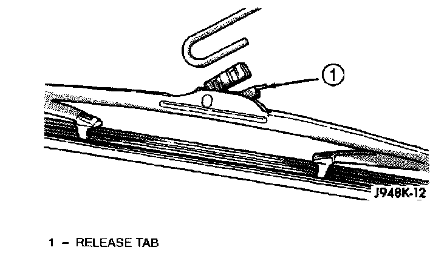
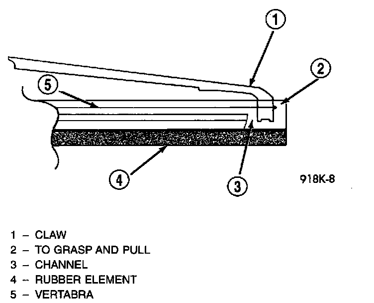

Wiper Blade
Note that the pinch-release for the wiper element should always be oriented towards the end of the wiper blade that is nearest to the wiper pivot. To remove the wiper blade and/or element, proceed as follows:1. Turn the wiper/washer switch to the On position. By turning the ignition switch to the On and Off positions, cycle the wiper blades to a convenient working location on the windshield.
2. Lift the wiper arm to raise the wiper blade and element off of the windshield glass.
3. Remove the wiper blade from the wiper arm, or the wiper element from the wiper blade as follows:
Wiper Blade Remove/Install - Typical:

a. To remove the wiper blade from the wiper arm, push the release tab under the arm tip and slide the blade away from the tip towards the pivot end of the arm.
Windshield Wiper Blade Element:

b. To remove the wiper element from the wiper blade, pinch the notched (pivot) end of the wiper element tightly between the thumb and forefinger. Then, pull the element firmly towards the wiper pivot to release the wiper blade claws from the wiper element retaining pockets. Once the claws are released from the retaining pockets, the element will slide easily out of the remaining claws.
4. Install the wiper blade on the wiper arm, or the wiper element in the wiper blade as follows:
a. To install the wiper blade on the wiper arm, slide the blade retainer into the U-shaped formation on the tip of the wiper arm until the release tab snaps into its locked position. Be certain that the pinch-release for the wiper element is oriented towards the end of the wiper blade that is nearest to the wiper pivot.
b. To install the wiper element in the wiper blade, be certain that the metal element rails (vertebra) are properly seated in the slots on either side of the rubber element. Starting at the wiper pivot end of the blade, slide the element through each pair of wiper blade claws. The element is fully installed when the claws on the wiper pivot end of the blade are engaged in the wiper element retaining pockets.